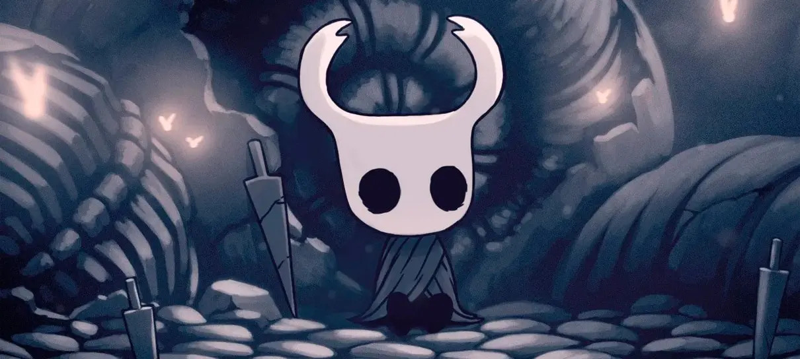
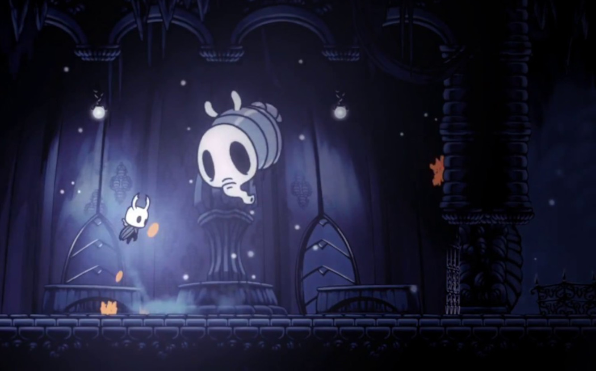
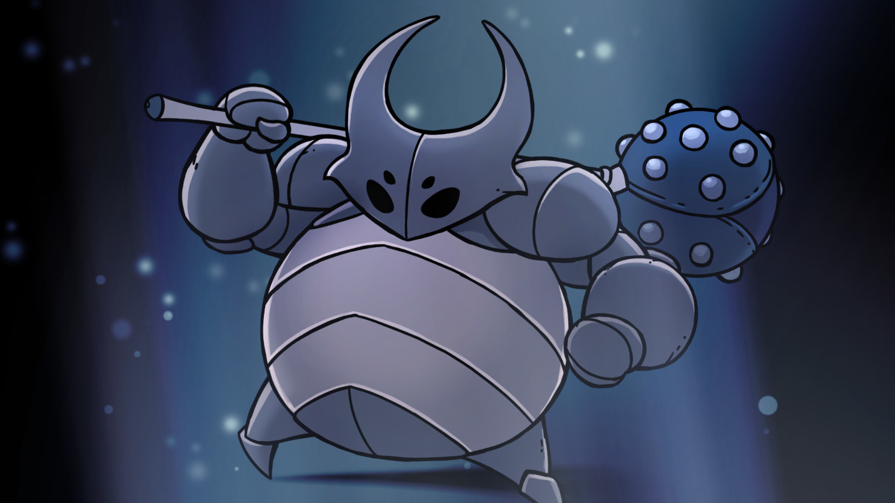
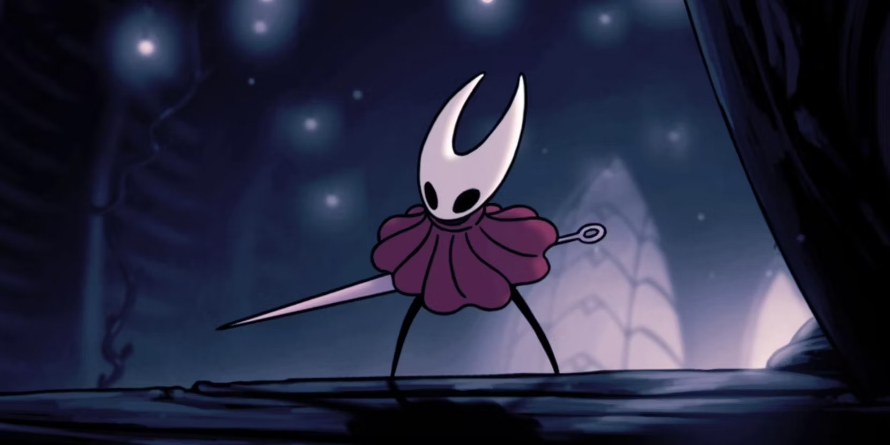
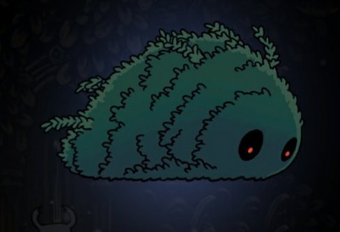

Contexto, história, informações de bosses e muito mais!

O que é Hollow Knight?
Hollow Knight é um clássico jogo 2D desenvolvido e publicado pela Team Cherry, onde nosso personagem se encontra num vasto mundo, sem objetivos inicialmente, e precisa explorá-lo, revelando o passado sombrio de Hallownest, lugar onde o jogo principal se passa.
Sendo um jogo de exploração, você deve se aprofundar nas profundezas do reino de Hallownest para conhecer todos os lugares que escondem segredos, enfrentando bosses e inimigos em sua jornada. Hollow Knight pode até ser em 2D, mas com certeza é um jogo eletrizante quando se está no meio de uma luta, lutando pela sobrevivência, bem como pode ser um jogo encantador enquanto explora as maravilhas escondidas do reino, acompanhadas de gráficos sensacionais com uma música de qualidade.
A equipe da Team Cherry, por mais que seja famosa, conta apenas com quatro pessoas! São elas Ari Gibson, William Pellen, Jack Vine e o compositor Christopher Larkin. Eles são responsáveis pela ambientação do jogo, as lutas emocionantes, as mecânicas criativas e até as famosas trilhas sonoras feita pelo Larkin são relembradas pelos fãs, transmitindo emoção em cada batalha!
História de Hollow Knight
Hollow Knight começa com uma cutscene que narra algum acontecimento importante: um casúlo, que contém três máscaras encustadas e exala uma fumaça laranja, é mostrado na tela, seguido de um grito sinistro. Nosso personagem, que não tem nome, é atraído para o reino de Hollownest por alguma força que não sabemos qual é. Após passarmos pelo tutorial, chegamos na primeira cidade do jogo: Dirtmouth, A Cidade Desvanescente
Nela, conhecemos o nosso primeiro amigo: o Ancião, que conta para nosso personagem (observação aqui, pois nosso personagem é mudo) como muitos aventureiros já tinham passado por Dirtmouth antes, mas todos se perderam quando decidiram entrar num poço próximo dali que prometia aventuras inimagináveis. Nosso personagem não pensa duas vezes antes de entrar no poço, e é aqui que conhecemos Encruzilhadas Esquecidas, uma das diversas áreas do jogo. E é aí onde nosso jogo realmente começa.
Todos os bosses de Hollow Knight
Por mais que Hollow Knight tenha sido criado por apenas quatro pessoas, o jogo conta com nada menos que quarenta e sete bosses!. Esse número considera bosses "piadas" que não podem bater no nosso personagem (Como o Zote), e considera variantes dos bosses. Vamos ver cada um mais de perto!
Mãe Mosca

Por mais que a Mãe Mosca esteja aqui, ela é na verdade um mini boss opcional no Hollow Knight, que pode ser encontrada na primeira área do jogo, Encruzilhadas Esquecidas. Ela é encontrada dormindo dentro de uma sala, e acorda quando o jogador a ataca, fazendo as portas se fecharem e começar batalha.
Depois de morta, ela faz com que um exame de moscas seja liberado, que o jogador deve matar para liberar a saída
Falso Cavaleiro

Esse sim é o primeiro boss oficial do jogo. O Falso Cavaleiro é encontrado também nas Encruzilhadas Esquecidas, dentro de uma sala que, quando o jogador entra e passa até um certo ponto, sua batalha se inicia automaticamente, sem que o jogador precise fazer alguma coisa. Ele contém uma forte armadura que usa para se proteger e utiliza uma maça pesada como arma, o que faz sua batalha ser árdua para um jogador iniciante, mas no nível certo para ainda conseguir se divertir com o primeiro boss.
O Falso Cavalheiro é, na verdade, um verme que habita o corpo de um dos Cindo Grandes Cavaleiros de Hallownest, que se apropriou desse corpo para tentar proteger seus irmãos. Isso é descoberto quando matamos ele e o verme sai de seu corpo, morrendo logo em seguida. Também descobrimos que sua maça na verdade é um outro verme que se utilizava de arma.
Hornet

Imenso Batedor Muscoso

Bom, pessoal, por hoje é isso! Espero que tenham se animado para jogar Silksong, então é melhor conhecer Hollow Knight e jogá-lo agora! Hollow Knight pode ser comprado na Steam através desse link, então compre Hollow Knight!